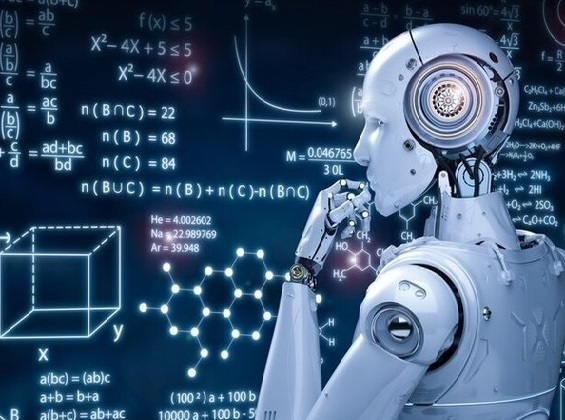

O FUTURO DA TECNOLOGIA
A sociedade sempre esteve muito curiosa e ansiosa pela revolução tecnológica ao ponto de os espaços serem divididos com os robôs com inteligência artificial similares a humanos, desempenhando diversas funções na nossa vida rotineira IA realmente se mostra presente do nosso dia a dia mas como a inteligência artificial é um segmento da engenharia de computação voltada para desenvolver tecnologias que imitam a inteligência humana mas,você sabia que isso já está presente em nossas vidas quando você entra no seu provedor de filmes streaming e ele te recomenda uma lista de filmes e séries. Baseados nos seus gostos anteriores, isso é a utilização de IA na sua vida assim como as redes sociais fazem para sugerir amigos, ou ainda exibir conteúdos tudo isso é possível a partir da coleta e análise dos seus dados, totalmente processados por IA,a IA chega para tornar mais simplificada a nossa vida e isso se aplica a todos os ramos veja a seguir o potencial da IA nas indústrias. Na fabricação, a melhoria contínua do processo faz parte do DNA de uma operação Tudo o que está sendo bem feito hoje, pode ser feito melhor amanhã nesses ambientes os robôs controlados por IA podem fazer contribuições significativas para a melhoria do processo desde o dia em que são implantado, ainda não chegamos ao ponto em que a IA habita um robô com características humanas mesmo que essa tecnologia não corresponda às características marcantes deixadas por filmes e livros,esse avanço é significativo e com capacidade para revolucionar a indústria. Nesse sentido, os robôs colaborativos e a Inteligência Artificial tem grande potencial para caminhar juntos os robôs são muito mais fáceis de usar do que as soluções de automação tradicionais com base no simples fato de que eles são seguros o suficiente para trabalhar perto de pessoas e não requerem horas de integração e programação personalizada para funcionar em uma tarefa.
Humanos - Robôs
A relação entre humanos e robôs e como prestam atenção a questões de gênero e de alteridade no cerne dessas relações para além de citar as contribuições específicas que autores, dentro e fora dos cânones dos estudos culturais,fizeram para o estudo da Inteligência Artificial na cultura cibernética,o artigo traça uma conversa entre as leituras da relação entre o humano e o robô, o humano, o pós-humano e as fissuras dos códigos quando nos aproximamos dessa região fronteiriça. O intuito é mapear o campo, tatear perspectivas, para pensar criticamente as contribuições e especulações criativas levantadas pela teoria crítica e, em especial, pela teoria feminista em torno da relação entre humanos e robôs.